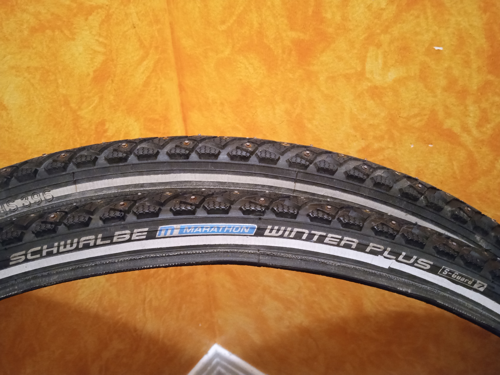
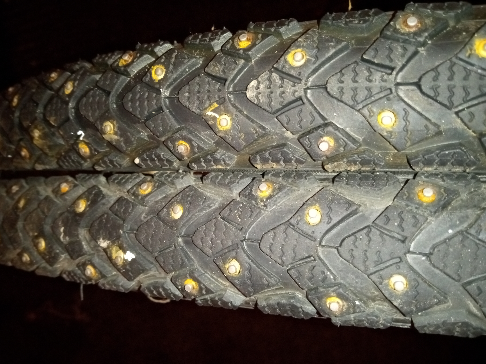
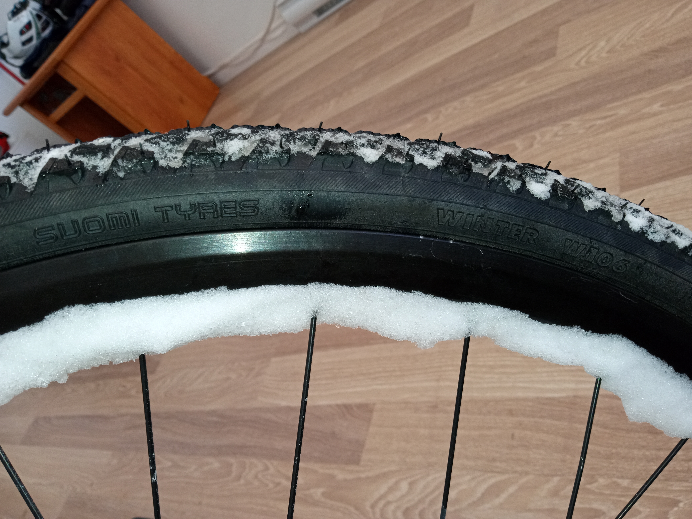
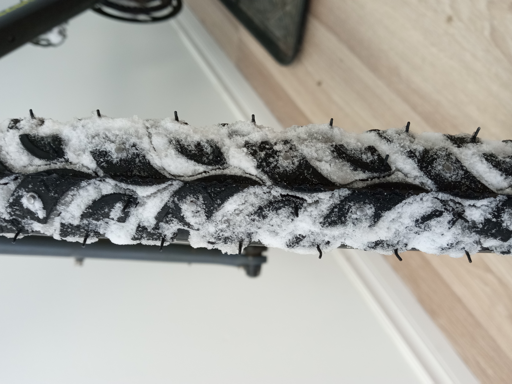
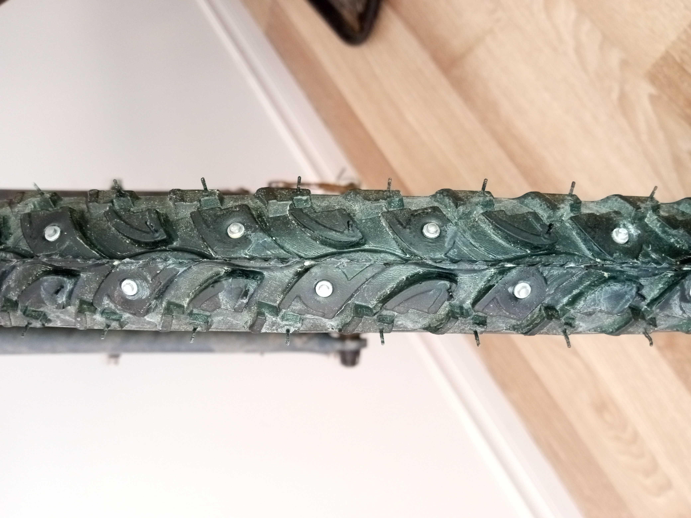

When I bought my first "winter" bike in 2018, I was hoping that I could just ride out of the store and cycle all winter long. Then came the first storms.
Quand j'ai acheté mon premier vélo « d'hiver » en 2018, j'espérais simplement sortir du magasin et rouler tout l'hiver. Puis sont arrivées les premières tempêtes.
It quickly became obvious that the "urban" tires that came with the bike were not enough, especially on smaller streets that don't see much traffic. They were simply slipping around and not providing enough traction.
Il est vite devenu évident que les pneus « urbains » fournis avec le vélo ne suffisaient pas, surtout dans les petites rues peu passantes. Ils glissaient dans tous les sens et n'offraient pas assez d'adhérence.
The first winter, I just decided to store the bike away for the months of January and February, where Eastern Canada gets the most snow, and rode the metro instead. I thought that having a bike rideable 10 months out of 12 was still great. And it was.
Le premier hiver, j'ai simplement décidé de remiser le vélo en janvier et février, les mois où l'Est du Canada reçoit le plus de neige, et de prendre le métro. Je me disais qu'un vélo utilisable 10 mois sur 12, c'était déjà super. Et ça l'était.
Nevertheless, public transit has never been my favorite means of transportation. It took me longer to commute than biking, even in winter, and I missed that feeling of being free to go anywhere at any time. The second winter, I decided it was time to upgrade those tires and try to get the most out of this bike. The LBS recommended studded tires and they had some Schwalbe Marathon Winter Plus in stock. I did not pounder much and bought a pair!
Le transport en commun n'a toutefois jamais été mon moyen de transport préféré. Mes trajets prenaient plus de temps qu'à vélo, même en hiver, et cette sensation de liberté d'aller n'importe où, n'importe quand, me manquait. Le deuxième hiver, j'ai décidé qu'il était temps d'améliorer ces pneus pour tirer le maximum de ce vélo. Ma boutique de vélo m'a recommandé des pneus à crampons et avait des Schwalbe Marathon Winter Plus en stock. Je n'ai pas trop réfléchi et j'en ai acheté une paire !
The Schwalbe Marathon Winter Plus (SMWP) is a great all-around winter tire when the street is reasonably plowed. It has four rows of studs providing great grip on ice and hard-packed snow. The tread pattern is tight and not very deep which gives it great rolling capability on asphalt.
Le Schwalbe Marathon Winter Plus (SMWP) est un excellent pneu d'hiver polyvalent quand la rue est raisonnablement déneigée. Ses quatre rangées de crampons offrent une excellente adhérence sur la glace et la neige tapée. Sa sculpture serrée et peu profonde lui donne un excellent roulement sur l'asphalte.
I equipped my bike with the 35mm version which is narrow enough to cut through piles of snow.
J'ai équipé mon vélo de la version de 35 mm, assez étroite pour fendre les amas de neige.


Where the SMWP shine the most is after freezing rain. Whereas cars and pedestrians would really have a hard time moving around, these tires makes you feel like you are riding on pure asphalt. You can brake or turn quite hard and won't feel like you are losing an inch of control. Of course, there are limits, but with some common sense it's really hard to get destabilized. It was really quite a surprise to see that level of performance on ice on two wheels.
C'est après la pluie verglaçante que les SMWP brillent le plus. Alors que les autos et les piétons ont vraiment du mal à se déplacer, ces pneus donnent l'impression de rouler sur de l'asphalte sec. On peut freiner ou tourner assez fort sans sentir qu'on perd le moindrement le contrôle. Bien sûr, il y a des limites, mais avec un peu de bon sens, c'est vraiment difficile de se faire déstabiliser. J'ai été franchement surpris de voir une telle performance sur la glace, sur deux roues.
On the other hand, I find that they can lack control on deeper snow, especially that which has been squished by cars and compacted into tracks. They do offer more grip than my summer tires in those conditions, and I could usually ride my way through, save during or right after heavy snowstorms. However, there are those moments when they can be uneasy to handle, when riding in the lesser plowed right hand side of the street for example.
Par contre, je trouve qu'ils manquent de contrôle dans la neige plus profonde, surtout celle écrasée par les autos et compactée en ornières. Ils accrochent quand même mieux que mes pneus d'été dans ces conditions, et j'arrivais généralement à passer, sauf pendant ou juste après les grosses tempêtes. Il y a toutefois des moments où ils deviennent difficiles à manier, par exemple quand on roule du côté droit de la rue, moins bien déneigé.
With those tires, I found myself basically having to stop cycling for 2-3 days after heavy snow, until streets got plowed and traffic created tracks. At the end of the day, these tires need a hard surface to be safe to ride.
Avec ces pneus, je devais en gros arrêter de rouler pendant 2 ou 3 jours après une grosse bordée, le temps que les rues soient déneigées et que la circulation crée des traces. Au bout du compte, ces pneus ont besoin d'une surface dure pour qu'on puisse rouler en sécurité.
I have changed my own tires since I was 14 and never really had any issues. However, I must say that those SMWP are extremely difficult to install and remove! I even broke a tire lever doing so and had to buy metal core ones from Park tools to make sure it would not happen again. I could see someone giving up and having to go to the LBS for this usually simple operation.
Je change mes pneus moi-même depuis l'âge de 14 ans et je n'ai jamais vraiment eu de problèmes. Je dois cependant avouer que ces SMWP sont extrêmement difficiles à installer et à retirer ! J'ai même brisé un démonte-pneu en le faisant et j'ai dû en acheter à âme métallique de Park Tool pour que ça ne se reproduise pas. Je comprendrais que quelqu'un abandonne et doive aller à la boutique de vélo pour cette opération habituellement simple.
This is a big downside to me as winter biking involves changing tires at least twice a year. I get that they have reinforced lining for puncture resistance, but in my opinion, these tires are more appropriate for a separate winter bike (or hiring a mechanic).
C'est un gros inconvénient pour moi, puisque le vélo d'hiver implique de changer de pneus au moins deux fois par année. Je comprends qu'ils ont une bande de renfort contre les crevaisons, mais à mon avis, ces pneus conviennent mieux à un vélo d'hiver séparé (ou à qui fait appel à un mécanicien).
This year, I went on the lookout for a new set of tires to help on those days where there is a bit more snow and steering is tricky. For a given bike, winter tires basically have three parameters to choose from:
Cette année, je me suis mis à la recherche de nouveaux pneus pour m'aider les jours où il y a un peu plus de neige et où la direction devient délicate. Pour un vélo donné, les pneus d'hiver se choisissent essentiellement selon trois paramètres :
I wanted to keep studded tires for those icy days. There is nothing worse than hitting a patch of ice while braking on studless tires. One question that came up is the ideal tire width. For now, I decided to keep the width in the mid-30s which I feel is more appropriate for urban settings than wider tires.
Je voulais garder des pneus à crampons pour les jours de glace. Il n'y a rien de pire que de tomber sur une plaque de glace en freinant avec des pneus sans crampons. Une question s'est posée : la largeur idéale. Pour l'instant, j'ai décidé de rester autour de 35 mm, ce qui me semble plus adapté à la ville que des pneus plus larges.
From what I could gather, slightly wider tires just grip less while not providing enough float on snow to make a difference, unless going all the way to a fatbike. One thing I did want to improve was the tread pattern to help with steering in the snow.
D'après ce que j'ai pu lire, des pneus un peu plus larges accrochent simplement moins, sans offrir assez de flottaison sur la neige pour faire une différence, à moins d'aller jusqu'au fatbike. Ce que je voulais vraiment améliorer, c'était la sculpture, pour mieux diriger le vélo dans la neige.
After some research, the Suomi Hakkapeliitta W106 seemed like a good fit. Suomi is the former bike tires division of Nokian which has been sold and renamed. As a side note, it looks like the Hakkapeliitta tire has been rebranded as Kide which I find a shame personally - Finnish words for winter equipment just sound cooler!
Après quelques recherches, le Suomi Hakkapeliitta W106 m'a semblé un bon choix. Suomi est l'ancienne division des pneus de vélo de Nokian, qui a été vendue et renommée. En passant, on dirait que le pneu Hakkapeliitta a été rebaptisé Kide, ce que je trouve dommage : les mots finlandais pour l'équipement d'hiver sonnent tellement mieux !
These tires have 2 rows of studs as opposed to 4 on the SMWP but have a deeper tread pattern.
Ces pneus ont 2 rangées de crampons, contre 4 pour le SMWP, mais une sculpture plus profonde.

|
 |
 |
Regarding logistics, I had to order them from the US as I did not find a distributor in Canada (though I did not look very hard). Suomi does not seem to have a large market share in North America. Maybe by calling various local stores one may find one that has some in stock or that can order a pair. There are sometimes deals on eBay for new or used Suomi tires that might be interesting for people on a budget.
Côté logistique, j'ai dû les commander aux États-Unis, faute d'avoir trouvé un distributeur au Canada (je n'ai pas cherché très fort, par contre). Suomi ne semble pas avoir une grande part de marché en Amérique du Nord. En appelant différentes boutiques locales, on peut peut-être en trouver une qui en a en stock ou qui peut en commander. On trouve parfois de bonnes affaires sur eBay pour des pneus Suomi neufs ou usagés, ce qui peut intéresser les petits budgets.
The version I ordered is the 37-622, which fortunately Peter White Cycles still had in stock, though not anymore. If anyone knows how to procure those in Canada easily, I would love it if you could shoot me a message!
J'ai commandé la version 37-622, que Peter White Cycles avait heureusement encore en stock (ce n'est plus le cas). Si quelqu'un sait comment s'en procurer facilement au Canada, écrivez-moi !
I have just installed them and am yet to be able to give a fully balanced review. The installation was a breeze, there is absolutely no comparison with the reinforced liner of the SMWP! That is definitely a big plus to me.
Je viens de les installer et je ne peux pas encore donner un avis complet. L'installation a été un jeu d'enfant, rien à voir avec la bande renforcée des SMWP ! C'est clairement un gros plus pour moi.
One thing that came as a surprise is that they definitely look narrower than the SMWP despite the Suomi being nominally 37 mm in size, versus 35 mm for the SMWP. I rode them during a very heavy storm and found that the bike was easier control when following compacted car tracks than it would have been with my former tires.
Une surprise : ils paraissent nettement plus étroits que les SMWP, même si les Suomi font 37 mm en théorie, contre 35 mm pour les SMWP. J'ai roulé avec pendant une très grosse tempête et j'ai trouvé le vélo plus facile à contrôler dans les traces compactées par les autos qu'il l'aurait été avec mes anciens pneus.
Tire pressure seems important, less pressure in front really helped in difficult conditions. I yet have to test them on ice - I am curious to see whether the reduced number of stud rows will make a difference here.
La pression des pneus semble importante : moins de pression à l'avant m'a vraiment aidé dans les conditions difficiles. Je dois encore les essayer sur la glace; je suis curieux de voir si le nombre réduit de rangées de crampons fera une différence.
Note: I will update this entry when I have a better overall appreciation of them!
Note : je mettrai cette page à jour quand j'aurai une meilleure idée d'ensemble !